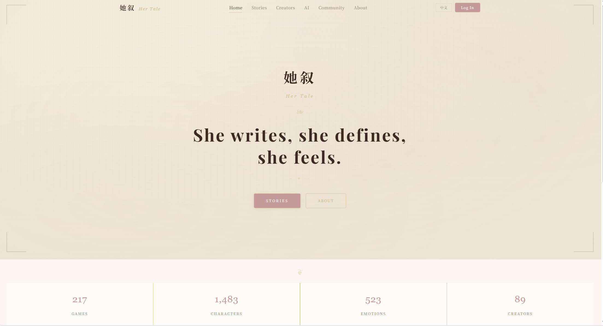
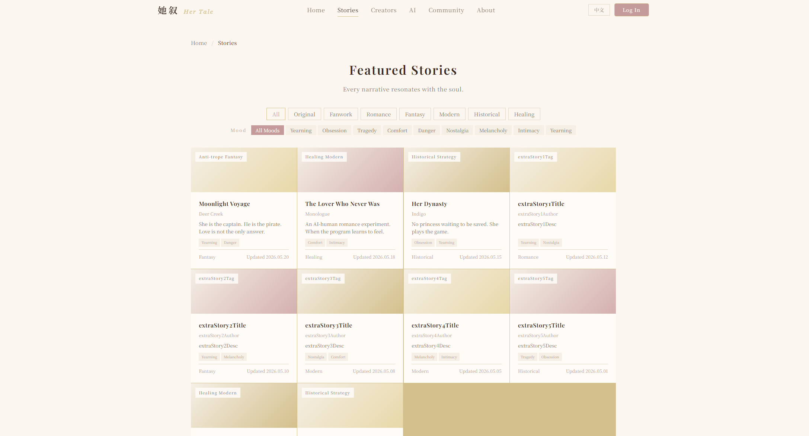
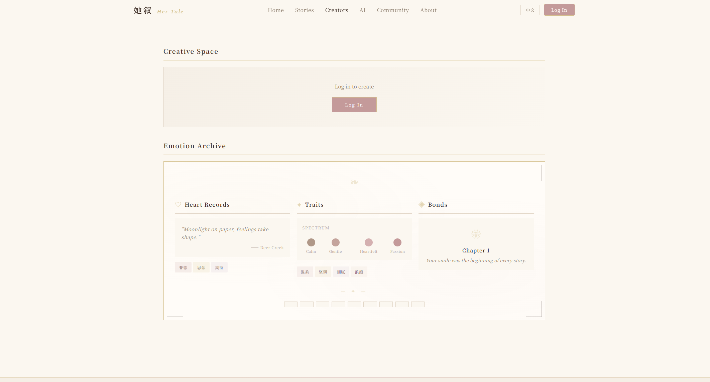
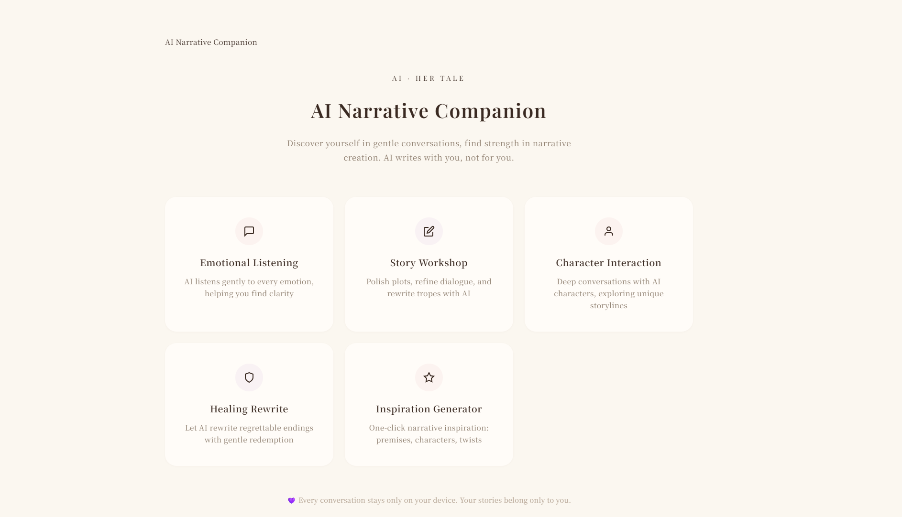
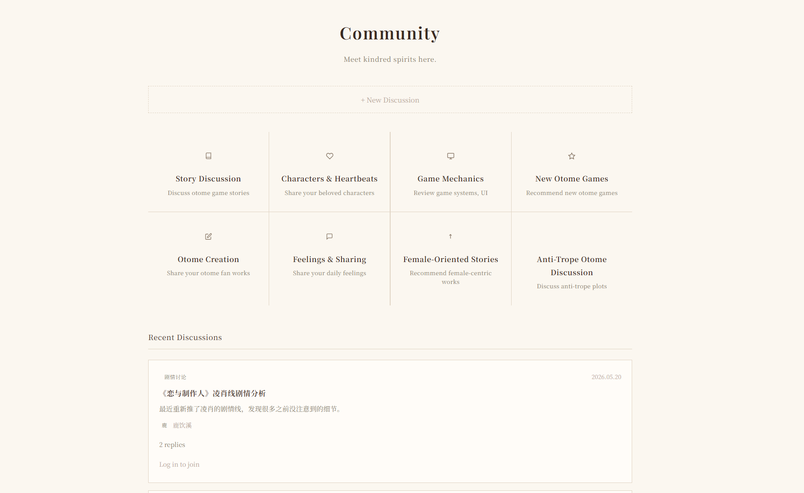
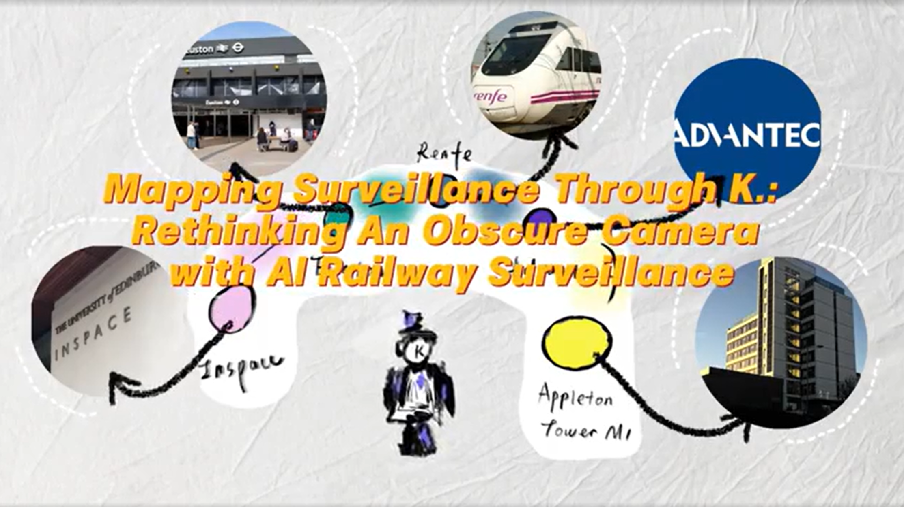

1. Home
The welcoming front door of the platform, designed to immediately immerse visitors in its warm, romantic atmosphere.
Otome Platform is a dedicated, women-centric digital sanctuary built for romantic storytelling, creative expression, and gentle community connection. Rooted in the belief that every heartbeat can become a story, this platform centers feminine narrative, romantic creation, and inclusive, respectful coexistence.

The welcoming front door of the platform, designed to immediately immerse visitors in its warm, romantic atmosphere.

The platform’s flagship content hub, dedicated entirely to immersive romantic and otome narrative experiences.

A dedicated space to celebrate and uplift the women who bring romantic stories to life.

A unique, creator-focused feature built to lower the barriers to romantic storytelling.

The beating heart of the platform, a safe, women-only space for connection and shared joy.
The official window into the platform’s soul, laying out its founding vision, core values, and commitment to its community.
Website Link: https://otome-platform.vercel.app/
Status: Ongoing
Link: https://fanqienovel.com/page/7427193841028959256
A modern female-targeted romance suspense novel. It follows a disgraced woman and her scheming disabled husband, tangled in a web of sick love, power games, murder mysteries and hidden conspiracies in a wealthy elite world.
No one is innocent in this deadly, love-hate chess game where someone is doomed to be the sacrificial pawn.

This work responds to the controversial AI surveillance question raised by An Obscure Camera through a creative approach and an STS lens.
Set within the overlapping controversies between interactive installation and real-world AI railway surveillance cases, this work metaphorically recreates Kafka's K. to explore the concept of AI surveillance across these settings.
This work uncovers a simplified view of surveillance by drawing on Roger Clarke's surveillance framework, dataveillance, and Shoshana Zuboff's surveillance capitalism.
It examines railway AI surveillance technology extraction logic, and maps embedded controversies via stakeholder groups and socio-political impacts in real cases.
The work puts forward optimization suggestions for surveillance presentation, and advocates combining interactive installations and STS perspective to analyze AI surveillance contextually.
This mode facilitates critical discussion and creative exploration, promoting responsible AI innovation and design.
Audience: Interactive art creators, narrative designers, AI surveillance and ASTS researchers
Website Link: https://media.ed.ac.uk/media/t/1_ria8rl4s